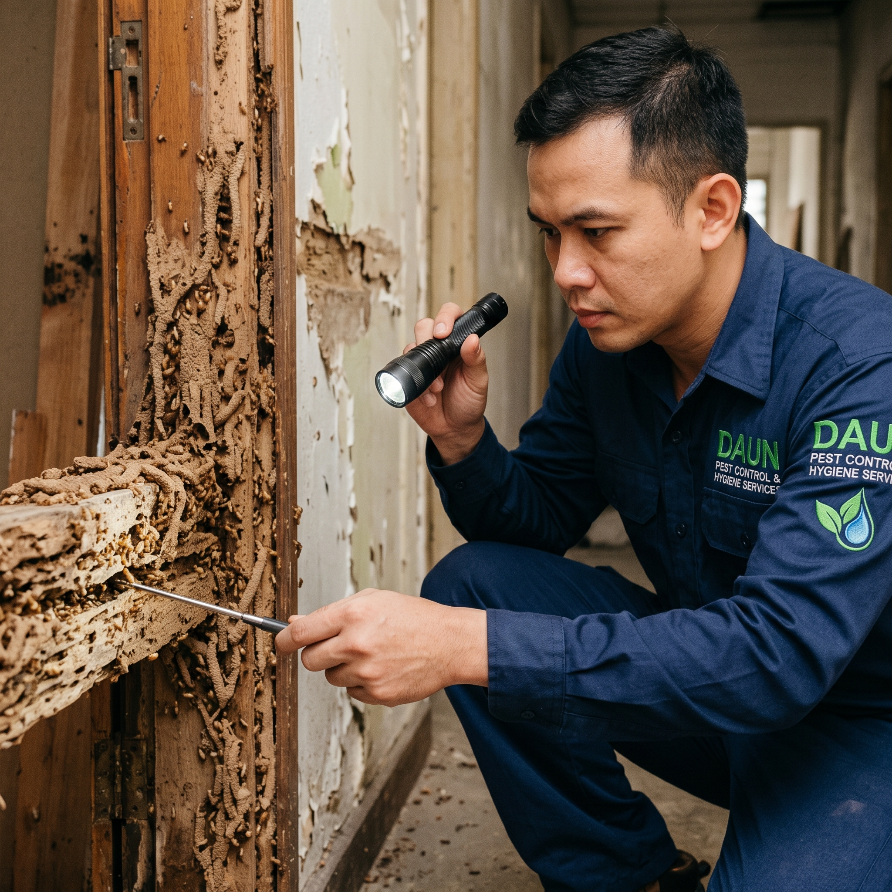
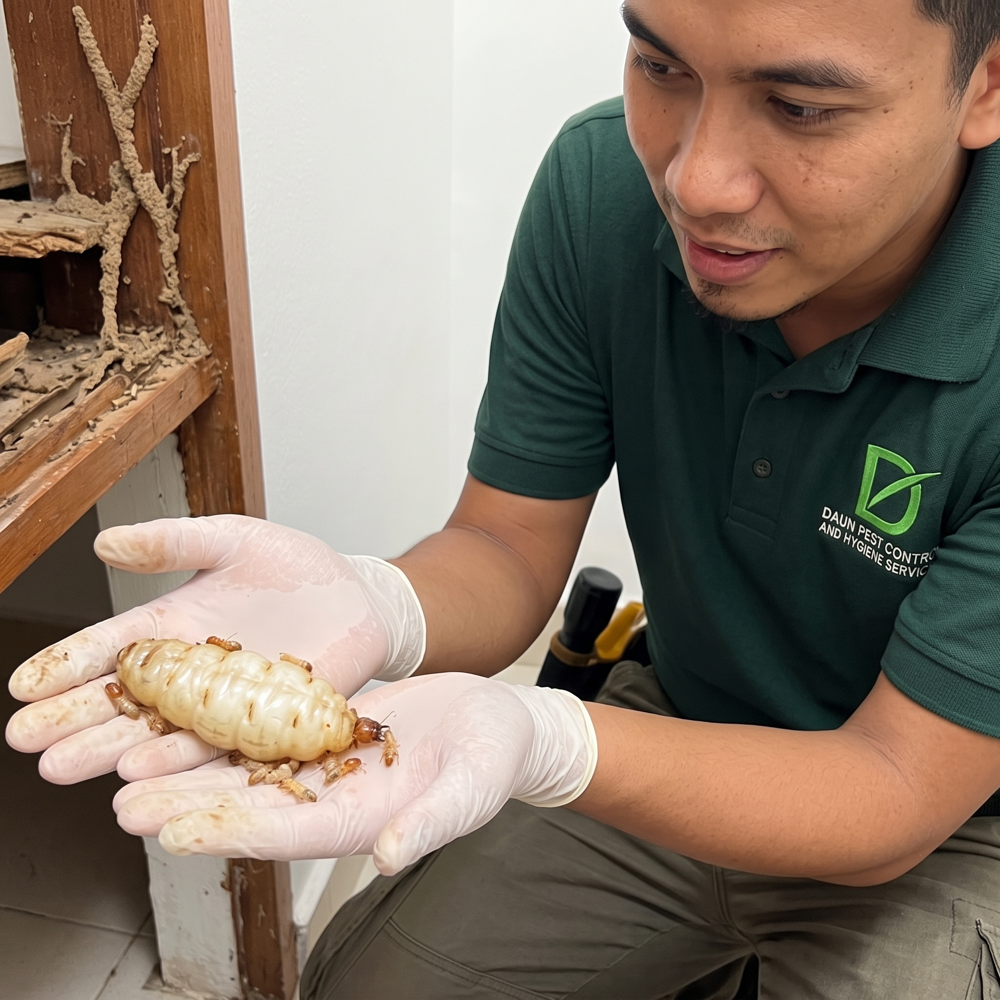
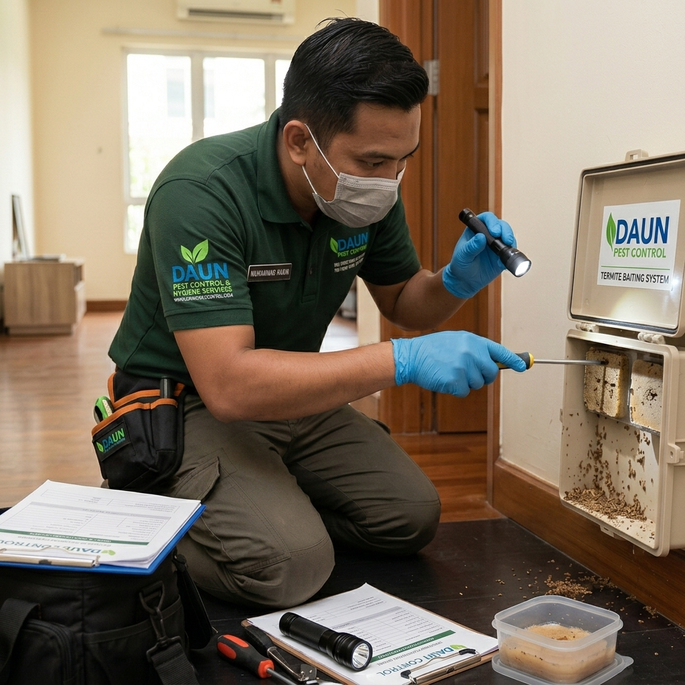
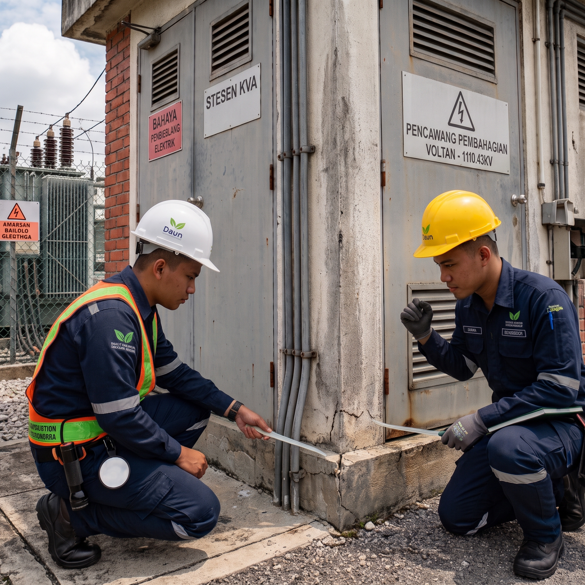
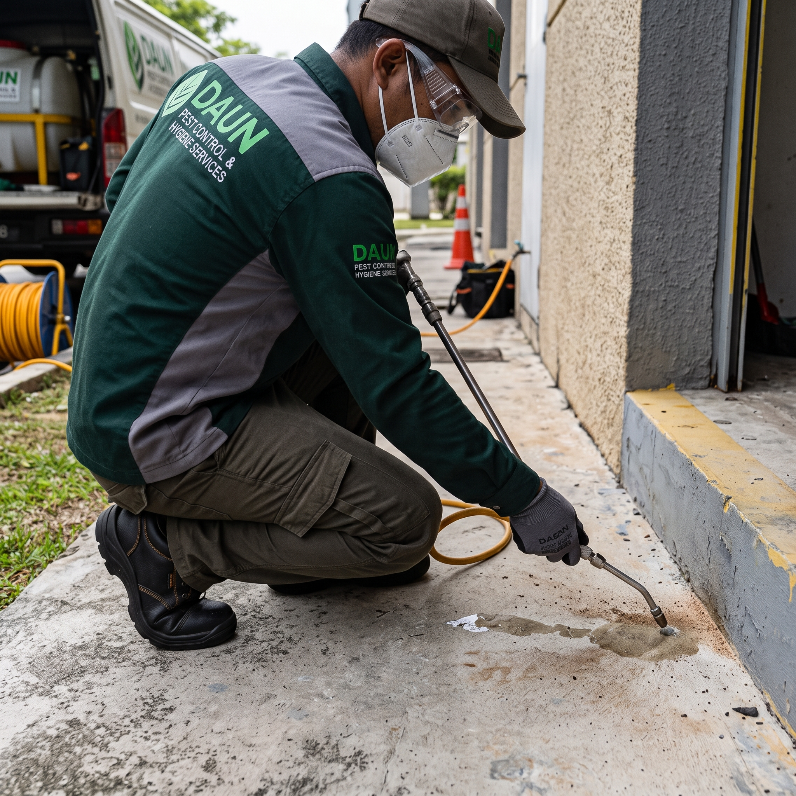

Termites are social insects living in large underground or wood-nested colonies. They feed primarily on cellulose found in wood, paper, and plant materials. They pose a severe threat because they destroy structural timber from the inside out, often remaining hidden until major structural collapse is imminent.
Termite Control

Overview
Daun Pest Control And Hygiene Services provides specialized termite management solutions designed to protect residential and commercial properties from severe structural damage. Termites are silent destroyers that can compromise the integrity of buildings before they are even detected, making expert inspection, advanced eradication methods, and long-term preventive barriers essential.
Termite Services Offered
- Inspection & Assessment: Detailed checks to locate active colonies, entry points, and damaged woodwork or structural foundations.
- Targeted Elimination: Customized treatment plans utilizing Integrated Pest Management (IPM) principles to isolate and eradicate subterranean and drywood termites.
- Preventive Treatments: Pre- and post-construction protective measures to establish long-term chemical or physical barriers against future infestations.
Termite Core Treatment Focus
- Subterranean Termites (e.g., Coptotermes): The most destructive species locally, building complex underground mud tubes to access wooden structures and buildings while retaining moisture.
- Drywood Termites: Infest seasoned timber directly without needing soil contact, leaving behind distinct tiny, hard, fecal pellets resembling sand near damaged wood.
- Mud Tunnels & Trails: Visible earthen tubes running along walls or foundations that termites use to travel safely between the soil and wood sources.
- Hollowed Timber: Wood structures or furniture that sound hollow when tapped due to termites eating them from the inside out while leaving a thin outer layer intact.
- Swarmers & Discarded Wings: The appearance of winged reproductive termites (chiut) or finding piles of discarded translucent wings near windowsills or light sources after a swarm.




Frequently Asked Questions
-
What are termites and why are they dangerous?
-
What are the key signs of a termite infestation?Key indicators include mud tubes running along walls, hollow-sounding timber when tapped, discarded translucent wings near windowsills or light sources, drywood termite frass (tiny hard pellets resembling sand), and blistered or sagging paint on wooden surfaces.
-
What is the difference between Pre-Construction Soil Treatment and Post-Construction Corrective Treatment?Pre-construction soil treatment is applied in stages across the building footprint—covering footings, ground beams, and aprons prior to casting concrete floor slabs. Post-construction corrective treatment involves strategic drilling around the perimeter and injecting liquid termiticide under pressure to saturate the soil beneath existing buildings.
-
How does the Termite Baiting System work?The termite baiting system uses specialized stations placed in-ground around the perimeter or above-ground on active infestation spots. These stations contain a cellulose-based bait matrix laced with a slow-acting insect growth regulator. Worker termites consume the bait and share it with the colony including the queen, leading to the complete elimination of the entire underground colony safely and eco-friendly.
-
Do your termite treatments come with a warranty?Yes, all our professional termite treatments—including soil spraying, drilling injections, and baiting systems—are backed by a professional workmanship and service warranty for your complete peace of mind.